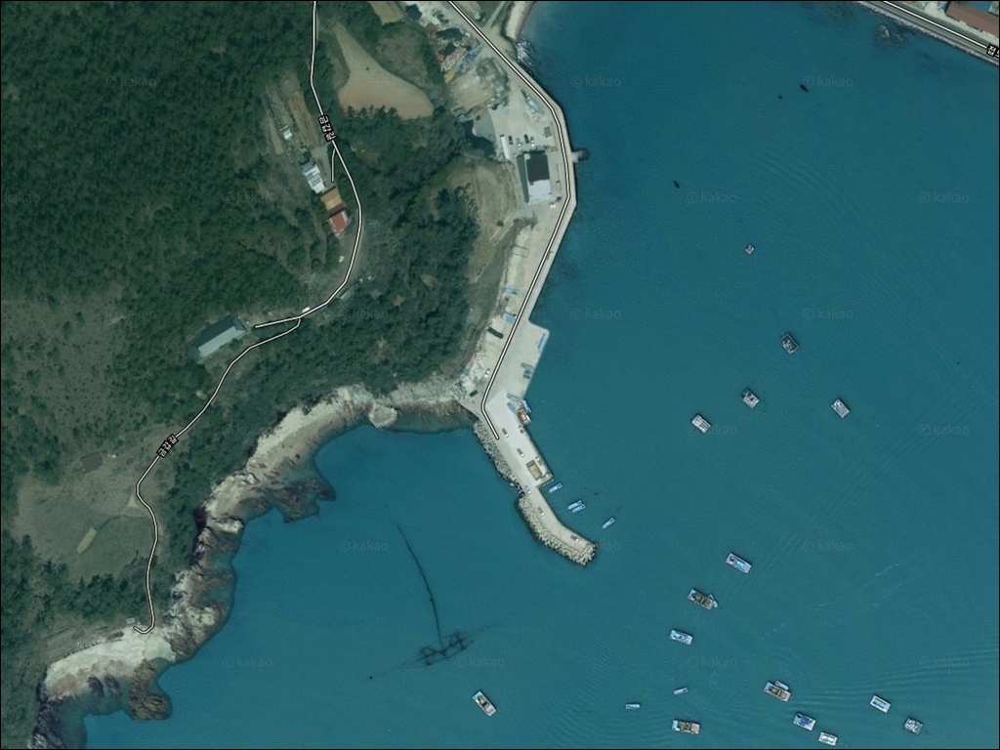
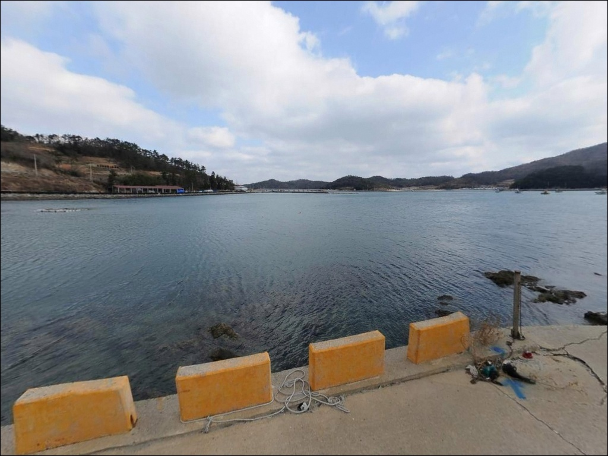
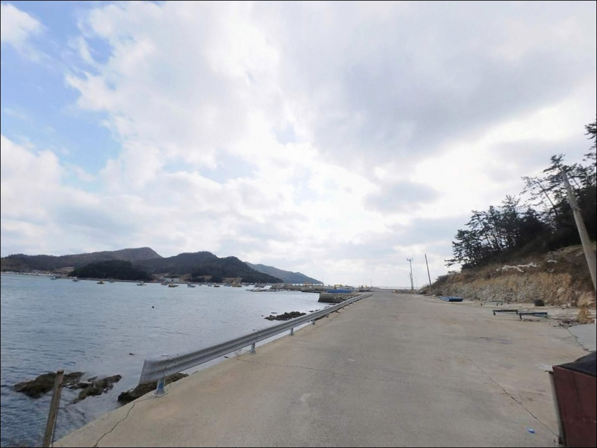
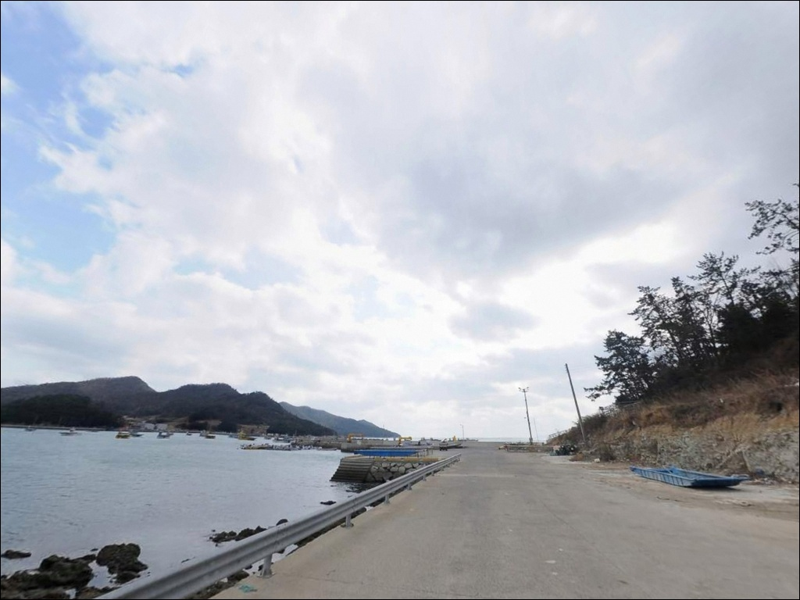
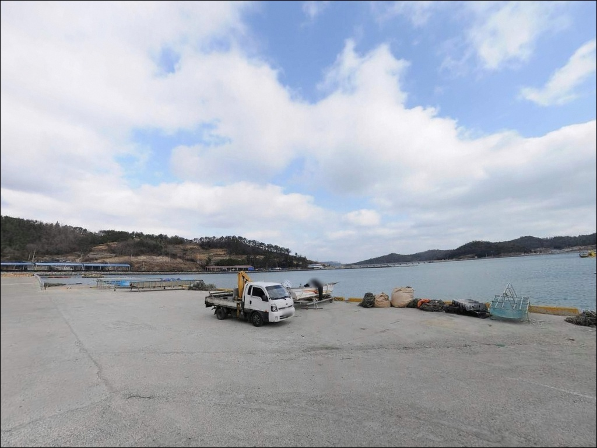
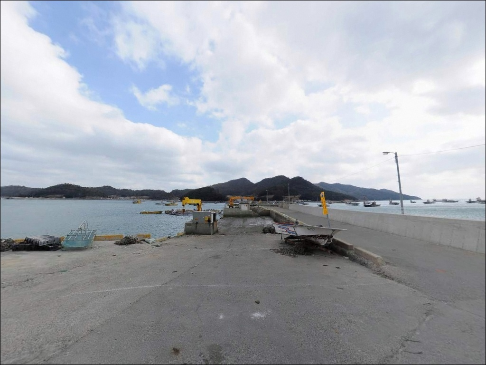
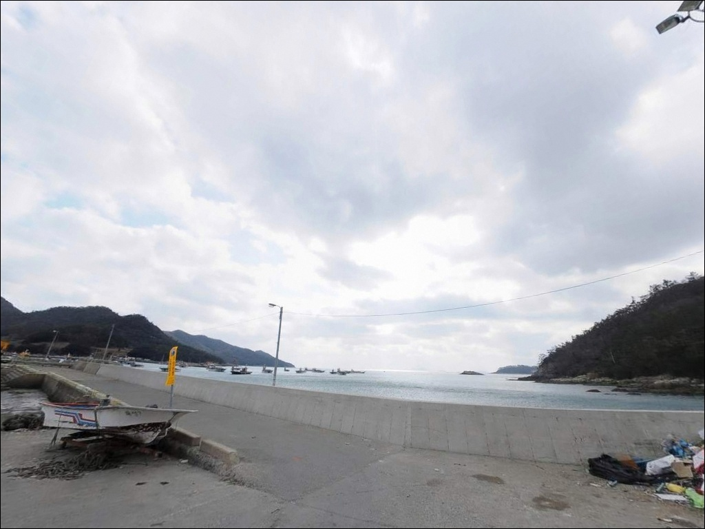
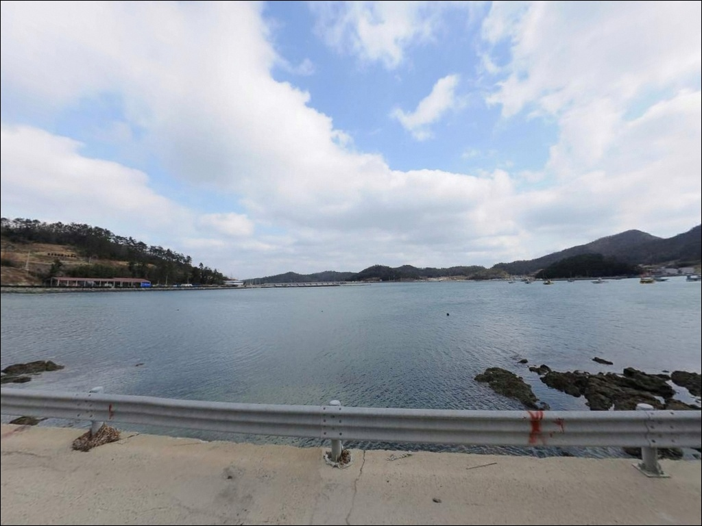
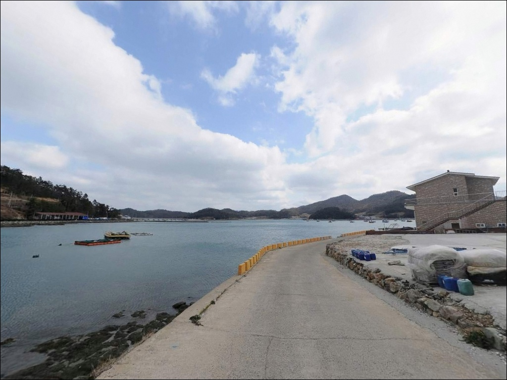

금갑 선착장, 진도 전남 진도군 바다 감성 차박, 낚시 명소


포인트 안내
금갑 선착장
전남 진도군 의신면 금갑리 398-8
금갑 선착장에서 가장 많이 틀리는 판단은
조류를 고려하지 않고 아무 때나 진입하는 것입니다.
진도 특유의 빠른 조류가 이 일대 수로를 통과하는 구조라
사리 전후 시간대에는 봉돌이 너무 빠르게 흘러
채비 컨트롤 자체가 불가능해지는 상황이 됩니다.
이 글은 금갑 선착장의 지형 구조,
진입 동선, 낚시 스타일별 공략 조건,
차박 체류 환경에 집중합니다.
특정 조황 단정이나 어종 보장은
이 글의 범위에 포함되지 않습니다.

1. 위치와 진입 동선 분석
금갑 선착장은 전남 진도군 의신면 금갑리에 자리하며,
진도 본섬과 접도를 잇는 연육교 직전에
위치한 소규모 어촌 선착장입니다.
진도읍에서 18번 국도를 타고 의신면 방향으로
약 22km 이동하면 금갑리에 닿습니다.
금갑리까지는 포장도로로 이어지며
승용차와 중형 SUV는 진입에 무리가 없는 편입니다.
다만 선착장 인근 마을 진입 구간은
도로 폭이 좁아지는 구간이 포함되는 편이라
캠핑카나 대형 차량이라면
출발 전에 위성지도로 경로를 미리 살피는 것이 좋습니다.
선착장 주변은 소규모 어선 계류지 구조로
회차 공간이 넉넉하지 않을 수 있습니다.
주차 후보는 선착장 인근 공터와
도보 거리 안에 있는 금갑해수욕장 주차장입니다.
어선 이동 동선을 막지 않는 위치를
우선으로 잡는 것이 기본입니다.

2. 차박 환경과 야간 체류 여건
금갑 선착장 인근은 소규모 어촌 마을 분위기로,
야간에는 차량 통행이 적고 비교적 조용한 편입니다.
선착장 주변 공터는 어선 작업 공간과 겹치는 경우가 있어
차박 거점으로는 인근 금갑해수욕장 주차장이
더 현실적인 선택입니다.
금갑해수욕장 주차장과 공중화장실은
진도군 공식 시설로 확인됩니다.
비수기에는 주차장이 한산한 편이라
낚시를 마친 뒤 차 안에서 하룻밤 머무는
차박 방식으로 활용하기에 큰 어려움은 없습니다.
다만 야간에는 조명이 충분하지 않을 수 있어
개인 헤드랜턴은 반드시 챙겨야 합니다.


3. 주변 편의시설 및 인프라 현황
금갑해수욕장에는 주차장과 공중화장실이
진도군 공식 시설로 운영 중입니다.
해수욕장 개장 기간은 통상 7월 중순~8월 중순이며
비개장 기간에도 해변 출입 자체는 가능합니다.
샤워장·매점 등은 성수기 운영 기준 시설이므로
비수기 방문 시 운영 여부는 현장에서 확인해야 합니다.
편의점이나 마트는 금갑리 권역 안에서 기대하기 어렵습니다.
식수·얼음·낚시 소품은 진도읍 방향에서
미리 보급하고 진입하는 것이 현실적입니다.
금갑마을 안에도 공중화장실이 별도로 확인되어
선착장 접근 거리에서 이용 가능합니다.
반경 약 3km 내에는 죽림어촌체험마을이 있어
낚시배 체험 등 연계 활동이 가능하며,
접도 연육교를 건너면
수품항 의신 해양낚시공원이
차량으로 5~10분 거리에 위치합니다.

4. 진입 전 반드시 챙겨야 할 준비사항
이 포인트를 찾기 전에 가장 먼저 확인할 것은
물때입니다.
진도 해역은 조류가 빠르기로 알려진 권역이며,
수로 입구 구조인 금갑 선착장은
사리 전후 시간대에 조류가 집중되는 편입니다.
바다타임에서 금갑리 기준 물때를 먼저 확인하고
조금 전후 또는 정조 타이밍을 중심으로
출발 시각을 맞추는 것이 기본 전략입니다.
진도 본섬과 접도 사이 수로 입구에 자리한 금갑 선착장은,
정조 타이밍에 원투낚시와 찌낚시 공략이 가능한
내만형 포인트입니다.
선착장 주변은 밑걸림이 있는 구간이 섞이는 편이라
여분 채비를 넉넉하게 준비하는 것이 좋습니다.
진도 서남해 권역은 너울성 파도와
강풍의 영향이 큰 지역이므로
기상청 해상 예보를 당일 아침에 다시 한번 확인하고
출발하는 것이 안전합니다.
어선이 오가는 소규모 선착장이라
어선 이동 동선과 어구에 접촉하지 않도록
자리를 잡는 것이 기본 매너입니다.
야간 낚시 시에는 구명조끼와 헤드랜턴을
반드시 갖추어야 합니다.

5. 수로 입구 지형이 만드는 낚시 여건
금갑 선착장의 핵심은 위치 자체에 있습니다.
진도 본섬과 접도 사이 수로가 열리는 지점에 자리한 구조라
조류가 이 수로를 통과하며
선착장 끝단과 수심 변곡부에
일정한 흐름이 만들어지는 편입니다.
금갑해변과 연속된 완만한 모래·혼합 지형이
선착장 주변 바닥을 구성하며,
석축과 수심 변곡부 주변에는
암반과 모래가 섞이는 구간이 형성되는 구조입니다.
이런 경계 구간은 바닥 어종이 머물기 좋은
지형 조건을 갖추는 편으로,
채비를 멀리 보내 바닥을 천천히 탐색하는
방식이 이 포인트에 어울립니다.
출조 전 물때 확인 없이 금갑 선착장을 찾으면,
강한 조류 탓에 채비 컨트롤 자체가 어려워지는
상황을 맞닥뜨릴 수 있습니다.
이 일대는 직접 조황 기록이 많지 않은 포인트로,
출조 전에 금갑해변 조황 또는 수품항 조황을
꼭 검색해 보시기 바랍니다.
진도 의신면 낚시 키워드로 최근 패턴을 함께 파악하면
보다 정확한 타이밍 판단이 가능합니다.


6. 이 포인트에 어울리는 낚시 스타일
원투낚시는 금갑 선착장 지형 조건에
가장 잘 맞는 방식입니다.
완만한 모래·혼합 바닥과 조류가 지나는
수로 구조는 채비를 멀리 던진 뒤
바닥권 어종을 기다리기 좋은 환경입니다.
감성돔, 도다리, 우럭, 노래미 등이
이 해역 유형에서 기대해 볼 수 있는 어종입니다.
찌낚시도 선착장 끝단이나
수심이 일정하게 유지되는 구간에서
시도해 볼 만한 방식입니다.
조류 흐름이 살아 있는 타이밍에
조류 방향을 따라 흘리는 방식이
이 포인트 수로 구조와 자연스럽게 맞습니다.
야간에는 소형 루어나 에깅도
추가로 시도해 볼 수 있는 편입니다.
진도 내만권 수로 주변은
농어와 볼락이 조류 변화 타이밍에
입질하는 패턴이 나타나는 구조이며,
조류가 꺾이거나 정조로 넘어가는 전후에
선착장 주변 석축 경계를 소형 루어로 탐색하는
방식이 어울립니다.

7. 조황이 기대에 못 미칠 때 이동할 대안 포인트
금갑 선착장 자리가 여의치 않거나
조류가 너무 강해 채비 운용이 어렵다면
접도 연육교를 건너
수품항 해양낚시공원으로 이동하는 것이
첫 번째 대안입니다.
안전 난간과 데크 시설이 갖춰진
1991년 지정 국가어항 방파제로,
차량으로 5~10분 거리에 있습니다.
수품항은 신·구 방파제가 복수 구조로 갖춰져 있어
원투낚시, 에깅, 루어낚시를 폭넓게 운용하기에
금갑 선착장보다 안정적인 여건입니다.
물때와 바람 방향에 따라 신방파제와 구방파제 중
상황에 맞는 자리를 선택할 수 있는 구조입니다.
보다 규모 있는 낚시 여건을 원한다면
임회면 서망항도 선택지입니다.
금갑리에서 차량으로 약 10~15분 거리이며,
방파제 규모가 크고 진도 서부 대표 어항으로
알려진 곳입니다.
차박 거점을 바꾸려는 경우에는
금갑해수욕장 주차장을 그대로 활용하는 방식이
가장 무난합니다.
선착장과 해수욕장이 인접해 있어
이동 없이 낚시와 차박을 병행하기 좋은 구조입니다.

조류 타이밍을 읽으면
금갑 선착장이 달라 보입니다
원투낚시나 찌낚시를 즐기는 낚시인이라면
금갑 선착장의 수로 입구 구조는
조류 타이밍을 맞췄을 때 충분히 공략할 만한
지형 조건을 갖추고 있습니다.
온라인 후기가 많지 않아 직접 발품을 팔아야 하는
조용한 탐험형 포인트이기도 합니다.
반면 물때 계산 없이 사리 전후에 진입하거나,
대형 차량으로 마을 도로를 준비 없이 찾아가면
낚시는 물론 진입 자체가 어려운 상황을
맞닥뜨릴 수 있습니다.
물때 확인, 진입로 사전 파악, 완전 자급 준비,
이 세 가지를 갖추고 간다면
기억에 남는 포인트가 될 수 있는 곳입니다.
금갑해수욕장에 차를 대고
조용한 어촌 앞바다에서 밤낚시를 즐기는
차박 여행자라면,
낚시와 차박을 한 자리에서 해결하기 좋은
조용한 출조지가 될 수 있습니다.